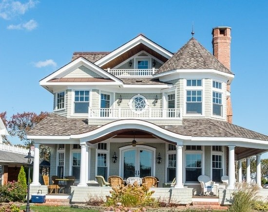
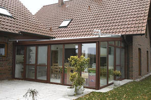
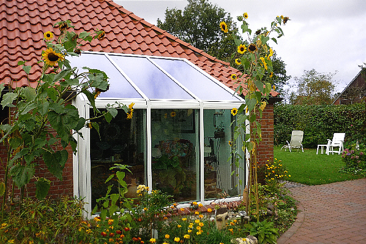
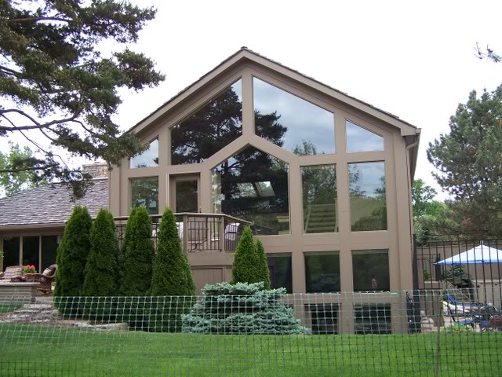
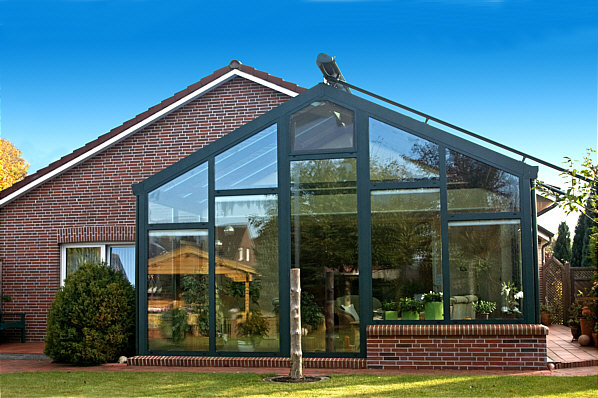

Монтаж зимних садов
Монтаж зимних садов
Очень интересно, современно и функционально будет смотреться на даче или в загородном коттедже зимний сад. Он соотносим по размерам с большой теплицей или с маленькой беседкой, полностью выполненной из металлопластика и имеющей панорамное остекление. Зимний сад или пристройка к дому лаконично впишутся в Ваш ландшафтный дизайн или облагородят двор среди растущей зелени летом и среди снега зимой. Зимний сад не будет казаться каким-то излишеством, а наоборот совместит в себе практичность и красоту. Благодаря изготовлению оконных конструкций по новейшим технологиям, стёкла пропускают свет и тепло внутрь сада, удерживая теплый воздух и сохраняя благоприятную среду для растений. Такие загородные постройки обретают популярность и за счет своей доступности и относительно недорогой ценовой категории. Зимний сад часто используют как место для отдыха, где можно уютно посидеть за книгой или насладится чаем за беседой.
Монтаж зимнего сада имеет свою последовательность:
- Создание проекта конструкции. Если зимний сад планируется как самостоятельная конструкция, то выбрать отдельное место, если пристройка к дому, то указать сторону и угол расположения относительно дома. На данном этапе также устанавливаются размеры сада, для этого лучше сразу определиться с объемом будущей растительности.
- Работы по установке каркаса зимнего сада по готовому проекту. Зимний сад предполагается полностью прозрачной конструкцией, поэтому следующий этап, это остекление в соответствие с созданием необходимых климатических условий.
- Выбор и установка стеклопакетов. Герметизация. Внешняя и внутренняя завершающая отделка готовой конструкции.
Монтаж зимнего сада, в какой-то степени, строительный процесс, поэтому в сравнении с обычной заменой пластикового окна, требует специальных знаний и опыта. Наши специалисты обладают не только такими технологиями монтажа, но и всеми строительными инструментами и оборудованием, которое может понадобиться при сборе сложнейших построек с большими тяжелыми стеклопакетами.